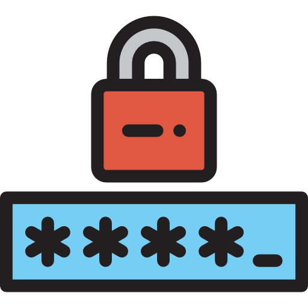

The Password Toolkit
How secure is your password?
Enter your password in the box below to see how secure it is.
Points are awarded depending on the uniqueness of your password.
The categories that your password are checked
against include password length, number of upper and lower case letters, how many numbers there are, how many special
characters have been used as well as what combination of the forementioned have been combined. Ultimately, the strength
of your password is based on its entropy.
Note that password meters are not perfect and can sometimes promote degradation of password strength due to not encouraging randomness.
For example, if a hacker knows the strength rules for a password meter, it becomes much easier for them to crack your password.
No password meter can truly take into account human behaviour and how passwords are created so please take these results with a grain of salt.
Please see the Password Entropy section for more information.
See the Tips section for more information on how to increase your password security.
Password Generator

First customize your password. You can generate as many passwords as you like.
Length:
Password Tips

A password is typically the least secure form of authentication Multi-factor authentication is undisputably the strongest approach to account security . However, as they are most commonly used as the first line of defense it is important to ensure that the security of your password is as high as practically possible.
Password Entropy
Password entropy relates to the selection process of a password. It esssentially measures what a password could be. It can be used to determine roughly how long it would take for a password to be cracked using brute-force methods.
Entropy is calculated in bits, for example, a password with 50 bits of entropy is as strong as a string of 50 randomly
chosen bits (e.g. each bit chosen using a coin toss). The base-2 logarithm of that number is used to calculate the possible number of attempts to crack a password
during a brute-force attack. E.g. 50 bits entropy (2^50) = 1,125,899,906,842,624 possible attempts.
On average, a hacker will only require half of the possible attempts before cracking
the password. Another way to calculate the possible combinations is to use the pool size. Take for example, a password of 4 characters with only lower case letters. The pool size would be 26
as only lower case letters are being used. So (26 ^ 4) means there are 456,976 possible combinations with an entropy of 18.802^18.80 = 456,976 (log2(26^4)).
By increasing the password by just one letter, the possible combinations jumps to 11,881,376. From this, we can see that by just increasing the entropy of a password by 1 bit, the possible attempts significantly increases.
By understanding this, it becomes clear that the single most important factor when creating a strong password is length not complexity. So yes, size matters.
Don't be fooled by the size of these numbers though, as compuational power increases the number of passwords that can be guessed per second also increases.
Take our earlier examples, a 4 character password with 18.80 bits of entropy at 1 million
guesses per second would take 0.46 seconds for the password to be cracked if all guesses were exhausted. The second password with 5 characers and 23.50 bits of entropy would take 11 seconds to be cracked. With the correct equipment, a hacker can potentially test billions or even trillions of passwords per second. So how secure if your password really? This is why maximizing the character pool is also important (numbers, symbols, upper/lower case).
People are notoriously bad at creating passwords, with the average password entropy being 40.54 bits.
Test your password and see how your password compares.
How strong should my passwords be?

Passwords should always be as strong as practically possible. So how much entropy is enough? Well, how long is a piece of string?
The bits of entropy required for a password depends on the threat model of the system of which the password is being created for.
There's not much practical use having a 20 character password for your desktop login. However, a 20 character password for say, your online banking
doesn't sound like such a bad idea.
As computational power increases, so will the required bits of entropy. The Password Toolkit uses the following chart to measure password
strength.
| Bits | Strength | Suitability |
|---|---|---|
| < 34 bits | Very Weak | Not reccommended but may protect against family members or friends |
| 35 – 44 bits | Weak | Suitable for desktop logins and other local accounts |
| 45 – 59 bits | Average | Suitable for protecting private information (e.g. email accounts, social media accounts) |
| 60 – 89 bits | Above Average | Reccomended for protecting private information |
| 90 – 109 bits | Strong | Suitable for protecting sensitive information (e.g. Networks, Company logins) and financial information |
| 110 – 129 bits | Very Strong | Reccomended for protecting finanical information |
| 130+ bits | Godlike | Potentially overkill. Suitable for paranoid security freaks |
Dictionary Attacks

It is almost never the case that a hacker will opt for a brute-force attack unless it is a last resort. Unlike brute-force attacks (guessing),
dictionary attacks are far more succesful. The reason being that humans typically are not good at creating passwords. Dictionary
attacks are a type of precision brute-force attack where passwords are compared against a list of common words, phrases or patterns.
The best defence against dictionary attacks is to create complex passwords. As dictionary attacks are usually the first line of
attack during password hacking, it is crucial to ensure your passwords are secure. The list below covers some of the key methods when creating
a secure password.
Tips to increase the security of your password
Below is a non-extensive list of methods to increase password security:
- Strong Passwords: At the very least 8 characters (ideally at least 16), with multiple character types including upper case, lower case, numbers and symbols.
- Repetition and Patterns: Try to avoid repetition and patterns. An example of a commonly used pattern is a word, with the first letter being upper case, followed by a number (e.g London2015).
- Avoid Common Passwords: Do not use passwords that include pet names, postcodes, birthdays, phone numbers and so on. Any words that can be found in a dictionary should also be avoided. Using words foreign to your own language can also increase the security.
- Regularly change passwords: Passwords should be changed on a regular basis (not to an old password).
- Do not reuse passwords: If a website you have an account with gets compromised, your other passwords will remain secure.
- Use a passphrase: Pass"WORD" in itself gives the impression that you should use a word. However, using a passphrase is much more secure (e.g Il0v3ThEPa$$wordTo0lk1t). Passphrases can also be much easier to remember.
- Randomness: The more random the better. Increasing randomness will increase the character pool (the variation of upper and lower cases, symbols, numbers, etc) and thus increases the entropy of the password.
- Bonus - use a password manager: Remembering multiple passwords can be difficult. Using a password manager can be useful when using multiple passwords.